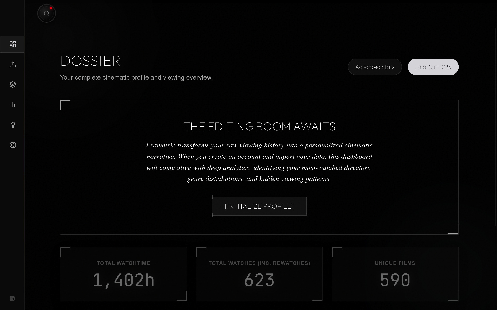
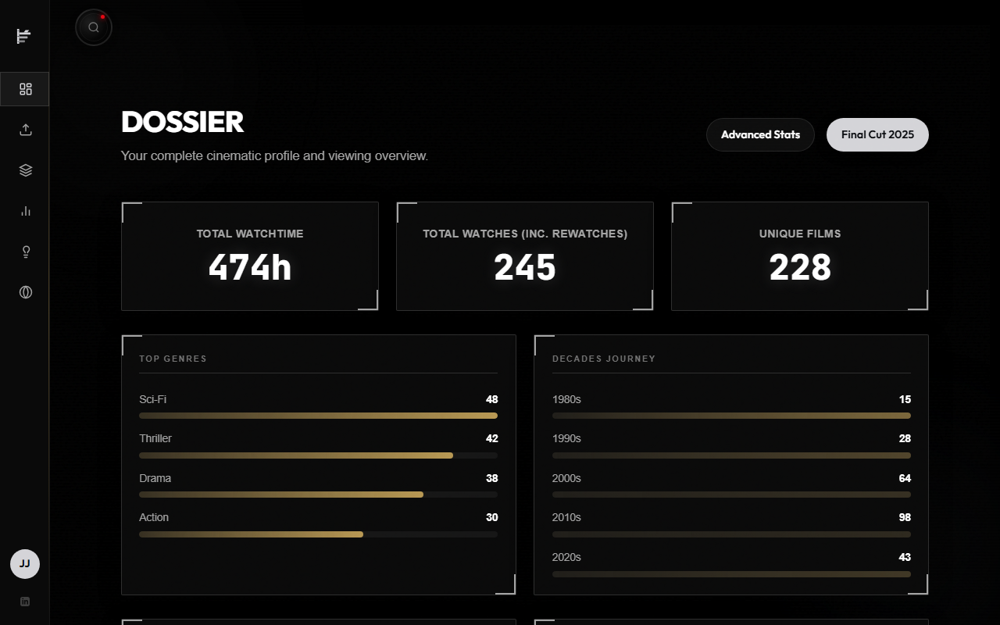
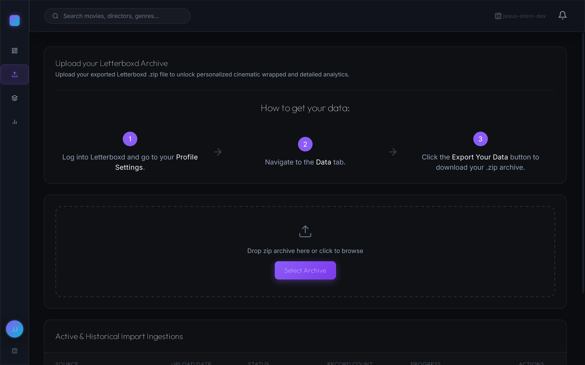
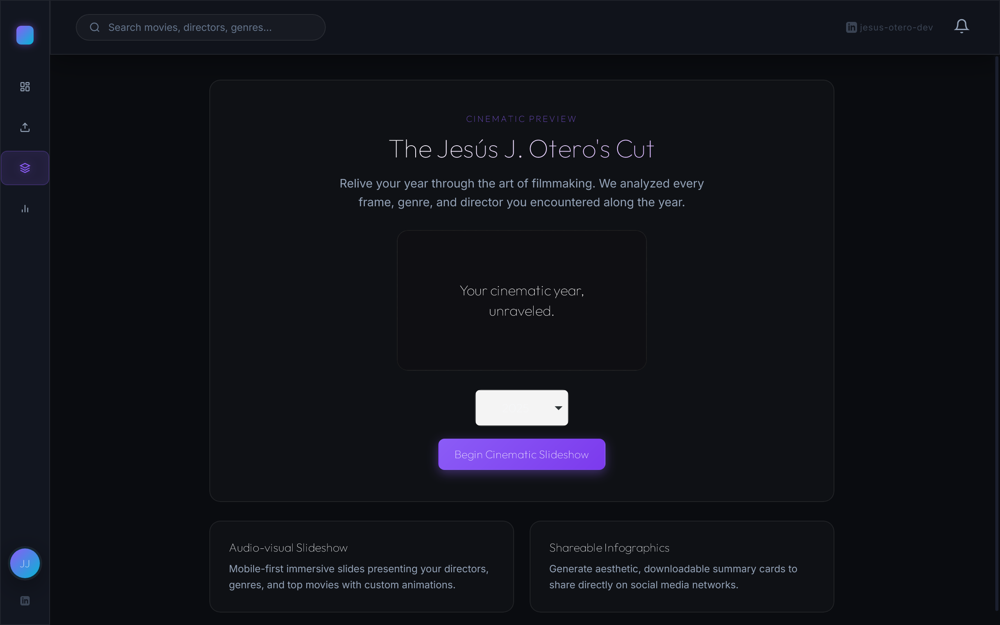
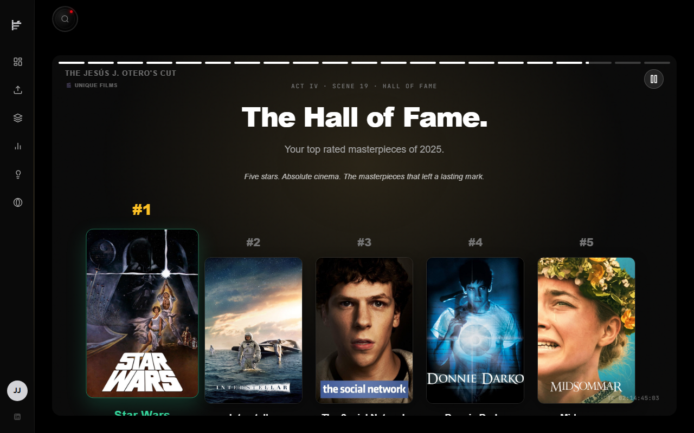
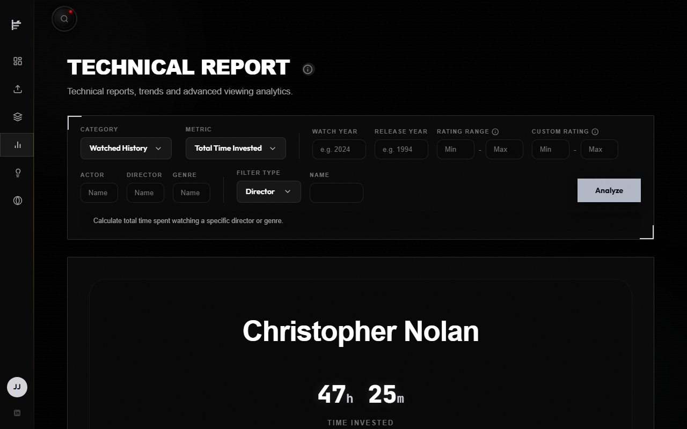
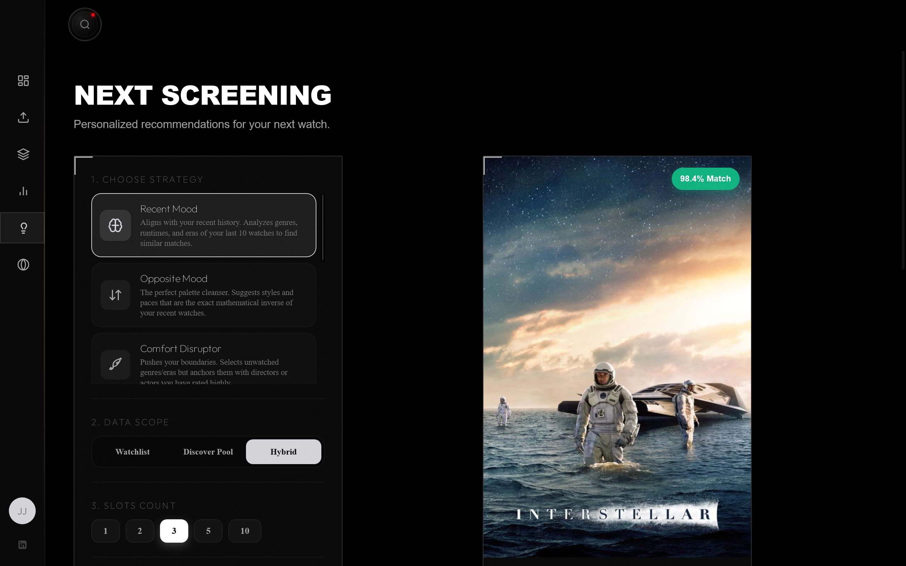
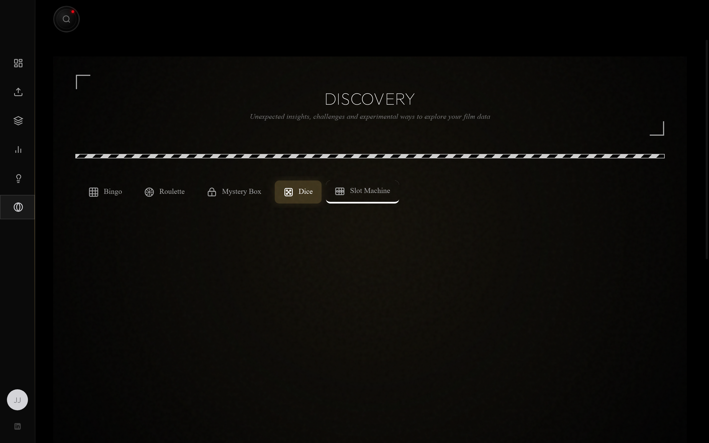
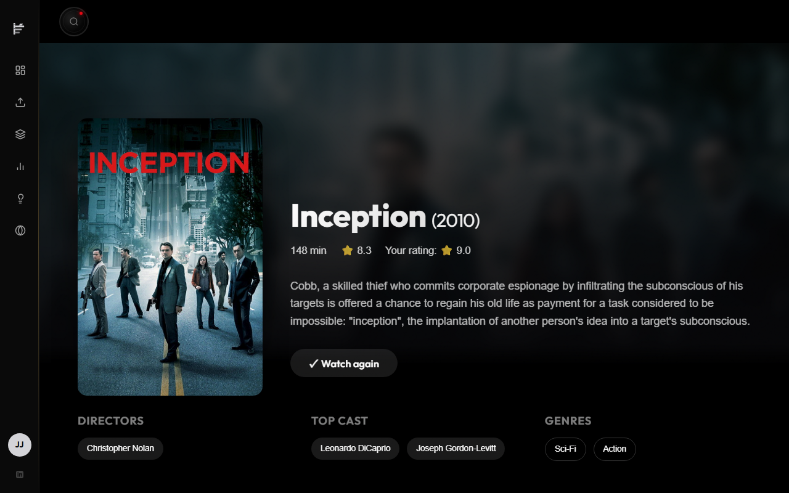

Hello World, I am Hola mundo, soy
Specializing in building high-performance .NET Core backend APIs and modular Angular frontend web apps. Experienced in database optimization, Microsoft Azure cloud deployments, and automated testing pipelines. I focus on writing clean, scalable code that delivers measurable system improvements.
Especializado en la construcción de APIs backend en .NET Core de alto rendimiento y aplicaciones web modulares con Angular. Experimentado en optimización de bases de datos, despliegues cloud en Microsoft Azure y canalizaciones de pruebas automatizadas. Enfocado en código limpio y escalable que genera mejoras medibles en el sistema.
I am a full-stack software developer specializing in high-performance backend systems. My experience spans building .NET APIs following Clean Architecture principles, database optimization, and managing centralized cloud infrastructure. I have a proven track record of handling high-responsibility tasks, such as managing shared platform services used across multiple corporate projects and optimizing database queries to eliminate critical performance bottlenecks.
Soy un desarrollador de software full-stack especializado en sistemas backend de alto rendimiento. Mi experiencia abarca la construcción de APIs en .NET siguiendo principios de Clean Architecture, optimización de bases de datos y gestión de infraestructura cloud centralizada. Cuento con una trayectoria demostrada en la gestión de tareas de alta responsabilidad, como el mantenimiento de servicios de plataforma compartidos por múltiples proyectos corporativos y la optimización de consultas a bases de datos para eliminar cuellos de botella de rendimiento críticos.
During my professional internships, I developed core backend features for high-traffic corporate APIs and helped optimize cloud monitoring telemetry in Microsoft Azure. As part of the platform engineering team, I shared the responsibility of maintaining centralized services critical to multiple business projects. I specialized in service performance—specifically migrating legacy Entity Framework queries to Dapper to resolve critical database bottlenecks, achieving a remarkable reduction in query response times. I apply this same architectural discipline, proactive attitude, and focus on performance to all my independent projects, ensuring high test coverage and strict decoupled boundaries.
Durante mis prácticas profesionales, desarrollé funcionalidades backend principales para APIs corporativas de alto tráfico y optimicé la telemetría en Microsoft Azure. Como parte del equipo de ingeniería de plataforma, compartí la responsabilidad de mantener servicios centralizados críticos para múltiples proyectos empresariales. Me especialicé en el rendimiento de servicios, concretamente migrando consultas heredadas de Entity Framework a Dapper para solucionar cuellos de botella de bases de datos críticos, consiguiendo una reducción notable en los tiempos de respuesta. Aplico esta misma disciplina arquitectónica, actitud proactiva y enfoque de rendimiento en todos mis proyectos independientes, asegurando una alta cobertura de pruebas y límites estrictamente desacoplados.
Contributed within a core platform engineering team developing and maintaining critical backend APIs and centralized services consumed by multiple high-traffic corporate applications.
Participación activa en el equipo principal de ingeniería de plataforma, desarrollando y manteniendo APIs backend críticas y servicios centralizados consumidos por múltiples aplicaciones corporativas de alto tráfico.
Full-stack project development using Angular and .NET as part of academic internships.
Desarrollo de un proyecto full-stack utilizando Angular y .NET como parte de las prácticas curriculares.
Customer service in Spanish and English in a high-pressure environment.
Atención al cliente en español e inglés en un entorno de alta presión.
Frametric is a modern cinematic data engine inspired by services like Letterboxd and Spotify Wrapped. It processes, normalizes, and enriches historical movie logs to generate deep analytics dashboards and micro-animated visual presentations.
Frametric es un motor moderno de datos cinematográficos inspirado en servicios como Letterboxd y Spotify Wrapped. Procesa, normaliza y enriquece registros históricos de películas para generar paneles de analítica profunda y presentaciones visuales microanimadas.









Frametric is structured as a Modular Monolith applying Clean Architecture patterns to prevent domain leakage. The business core remains completely decoupled from database engine models, third-party libraries, and file-parsing schemas:
Pure C# aggregates containing business rules and zero external imports.
Mediator CQRS handlers and interface abstractions.
Database context persistent configurations, custom CsvHelper stream mappers, and external client integrations via the TMDB API.
Thin REST controllers securing requests via JWT policies and input-validating middleware.
Frametric está estructurado como un Monolito Modular aplicando patrones de Clean Architecture para evitar fugas de dominio. El núcleo de negocio permanece completamente desacoplado de los modelos de base de datos, bibliotecas de terceros y esquemas de análisis de archivos:
Agregados puros en C# que contienen las reglas de negocio y cero dependencias externas.
Mediator CQRS y abstracciones de interfaces.
Persistencia de base de datos, mapeo de archivos csv con CsvHelper en flujo de memoria y cliente de API TMDB.
Controladores REST simplificados con políticas JWT y middleware para validaciones de esquemas.
Mirroring industry best practices, the database layer combines Entity Framework Core and Dapper to optimize specific operations:
Reflejando las mejores prácticas de la industria, la capa de datos combina Entity Framework Core y Dapper para optimizar operaciones clave:
Bulk ZIP imports contain bare titles and years. The enrichment of genres, runtime minutes, and poster assets is decoupled to ensure fast response times:
La importación masiva de archivos ZIP contiene solo títulos y años. El enriquecimiento de metadatos (géneros, duración y posters) se desacopla para acelerar la respuesta de la API:
To guarantee long-term maintenance and zero regressions, Frametric utilizes a multi-tiered automated testing framework:
Para garantizar la mantenibilidad y prevenir regresiones, Frametric cuenta con un robusto sistema de pruebas automatizadas en múltiples niveles:
To keep user engagement high, Frametric implements a suite of interactive game mechanics designed with micro-animations and robust client-side state management:
Para maximizar el compromiso del usuario, Frametric implementa una suite de mecánicas de juego interactivas con microanimaciones y una sólida gestión de estado:
“I had the opportunity to supervise Jesús Otero during his internship as a Backend Developer at Embrace-it, and his growth during this time has been highly positive. Jesús worked on developing features for a critical API that impacts several key company projects, quickly adapting to the environment and the required technical standards. Throughout his internship, he worked with technologies such as .NET, Entity Framework Core, Dapper, and Azure.
I would particularly highlight his capacity for learning and his proactive attitude when tackling new tasks and technologies. He also participated in research tasks focused on optimizing monitoring in Azure, showing initiative and a strong interest in understanding both the functional and technical sides of our solutions. It has been a pleasure working with him, and I am certain he will continue to grow professionally in backend development.”
“Tuve la oportunidad de supervisar a Jesús Otero durante su periodo de prácticas como Backend Developer en Embrace-it, y su evolución durante este tiempo ha sido muy positiva. Jesús ha trabajado en el desarrollo de funcionalidades dentro de una API crítica que impacta en distintos proyectos importantes de la compañía, adaptándose rápidamente al entorno y al nivel técnico requerido. Durante las prácticas ha trabajado con tecnologías como .NET, Entity Framework Core, Dapper y Azure.
Destacaría especialmente su capacidad de aprendizaje y su actitud a la hora de afrontar nuevas tareas y tecnologías. También participó en tareas de investigación orientadas a optimizar la monitorización en Azure, mostrando iniciativa e interés por comprender tanto la parte funcional como técnica de las soluciones. Ha sido un placer trabajar con él durante esta etapa y estoy seguro de que seguirá creciendo profesionalmente en el ámbito del desarrollo backend.”
“I highly recommend Jesús Otero, as working with him has been an extremely positive experience. In addition to possessing strong technical knowledge and programming skills, he has consistently demonstrated commitment, responsibility, and an excellent attitude toward solving problems and supporting the team. He is proactive, eager to learn, and adapts quickly to new challenges.”
He focused primarily on backend development, building a .NET API following clean architecture best practices. Additionally, he participated in migrating one of the core project APIs from Entity Framework Core to Dapper, achieving excellent results. Jesús was also part of the platform team, managing centralized services used by multiple company applications. This carries significant responsibility, as any issue can impact multiple projects, and he rose to the occasion both technically and professionally, showing confidence, dedication, and the ability to work in critical environments.
Feel free to reach out to me directly if you need any further information regarding Jesús: adrianbeigveder.j@gmail.com”
“Quiero recomendar a Jesús Otero porque trabajar con él ha sido una experiencia muy positiva. Además de tener muy buenos conocimientos técnicos y desenvolverse muy bien programando, siempre ha demostrado compromiso, responsabilidad y una gran actitud para resolver problemas y ayudar al equipo. Es una persona proactiva, con muchas ganas de aprender y capaz de adaptarse rápidamente a nuevos desafíos.
Ha trabajado principalmente en el backend, desarrollando una API en .NET siguiendo buenas prácticas basadas en Clean Architecture. Además, participó en la migración de una de las APIs principales del proyecto, pasando del uso de Entity Framework Core a Dapper, con muy buenos resultados. Jesús también ha formado parte del equipo de plataforma, donde gestionamos servicios centralizados consumidos por varias aplicaciones de la compañía. Esto implica una gran responsabilidad, ya que cualquier incidencia puede afectar a múltiples proyectos, y ha sabido estar a la altura tanto a nivel técnico como profesional, demostrando seguridad, implicación y capacidad para trabajar en entornos críticos.
Dejo por aquí mi contacto personal por si alguien necesita más información acerca de Jesús: adrianbeigveder.j@gmail.com”
I am always open to new opportunities, collaborations, or simply talking about software engineering. Feel free to reach out to me through any of my channels or download my professional resume below.
Siempre estoy abierto a nuevas oportunidades, colaboraciones o simplemente hablar sobre ingeniería de software. No dudes en ponerte en contacto conmigo a través de cualquiera de mis redes o descarga mi currículum profesional abajo.